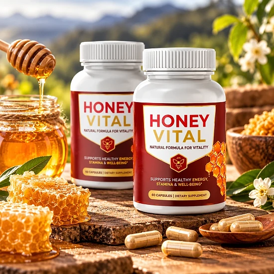
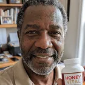
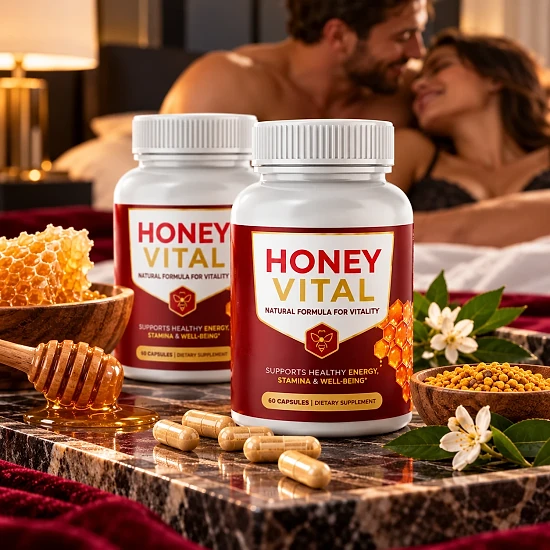
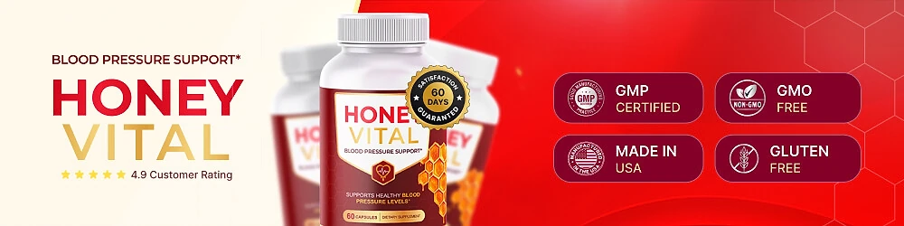

What Is Honey Vital And How Does It Work?
Honey Vital is a dietary supplement in capsule form that, according to the official website, is designed to support healthy blood pressure levels, cardiovascular wellness, and overall heart health. The brand presents it as a simple daily addition for adults who want to give more attention to their heart-health routine.
The formula combines essential vitamins with a group of traditional botanicals. The official FAQ lists Vitamin C, Vitamin B6, Vitamin B12, and Folate, together with a 620 mg proprietary botanical blend featuring Hawthorn, Garlic, Olive Leaf, Hibiscus, Green Tea, and Juniper Berry.
How does it work? The official website explains that the body relies on vitamins, nutrients, and plant compounds every day, and Honey Vital was formulated to provide daily nutritional support for healthy circulation and cardiovascular care. The brand also says it avoids long lists of synthetic additives and focuses on botanicals with a long history in heart-wellness routines.
Hawthorn and Hibiscus are the plants the brand highlights most. Hawthorn has been used for generations in herbal preparations for the heart, and Hibiscus is rich in naturally occurring antioxidants. Olive Leaf and Green Tea contribute polyphenols, and Garlic is known for its natural sulfur compounds.
Honey Vital is not presented as a quick fix. The official website describes it as something you take twice a day and keep doing, as part of a heart-conscious lifestyle with balanced meals and regular activity. Individual results may vary.
Each bottle contains 60 capsules, which the official website presents as a 30-day supply. The banner on the official materials states that it is made in the USA, GMP certified, non-GMO, and gluten-free.
Honey Vital is a dietary supplement. It is not intended to diagnose, treat, cure, or prevent any disease, and it does not replace blood pressure medication or any treatment prescribed by a doctor.
Honey Vital Ingredients
The official website describes the botanicals in Honey Vital one by one. These are the main components:
Hawthorn: made from the berries, leaves, and flowers of the hawthorn plant, with a long history in herbal formulas for heart wellness.
Hibiscus: a vibrant flower known for its naturally occurring antioxidants, traditionally used in herbal teas and preparations.
Olive Leaf: taken from the leaves of the olive tree and naturally rich in polyphenols.
Garlic: a culinary and traditional botanical known for its natural sulfur compounds.
Green Tea: leaves of the Camellia sinensis plant, rich in catechins.
Juniper Berry: a small, aromatic berry valued for generations in botanical traditions.
Alongside the plants, the formula provides Vitamin C, Vitamin B6, Vitamin B12, and Folate. Vitamin C is an antioxidant, and the B-vitamins and Folate support normal energy metabolism and normal homocysteine metabolism.
The botanicals are part of a 620 mg proprietary blend, so the website does not show how much of each plant is used. Read the Supplement Facts panel on the bottle for full details, including any other ingredients used in the capsules.
Honey Vital Side Effects
The official website presents Honey Vital as a formula of vitamins and well-known botanicals, without a long list of synthetic additives. Most of these ingredients are common in herbal supplements, and the website does not report specific side effects.
The most important caution comes from the official FAQ: if you are taking prescription medication for high blood pressure or a cardiovascular condition, speak with your physician before adding Honey Vital to your routine. This is not a formality. Hawthorn, Garlic, Hibiscus, and Olive Leaf are traditionally associated with circulation, and combining them with blood pressure or blood-thinning medication should be reviewed by a doctor.
The same care applies if you are pregnant or nursing, have a medical condition, or are scheduled for surgery. Green Tea contains small amounts of natural caffeine, which some people prefer to limit.
Do not take more than the recommended amount, keep the bottle out of reach of children, and never stop or change prescribed medication on your own. If you notice dizziness, stomach discomfort, or any unusual reaction, stop taking the product and speak with a healthcare professional. Tolerance varies from person to person, so start with the label's directions and pay attention to how you feel during the first weeks.
Honey Vital Dosage
The official website describes Honey Vital as a formula you take twice a day. Each bottle holds 60 capsules and is presented as a 30-day supply, which corresponds to one capsule in the morning and one later in the day. Always confirm the directions printed on the label and follow them.
Taking the capsules with water and at roughly the same times each day, for example with breakfast and dinner, makes it easier to stay consistent. The brand stresses consistency: the formula is meant to be part of a steady routine, not something you think about only now and then.
Do not exceed the recommended dose. If you use blood pressure medication, ask your doctor before starting, and keep monitoring your blood pressure as your doctor advises.
Honey Vital is meant to complement a heart-healthy lifestyle: balanced meals with less salt, regular physical activity, good sleep, and limited alcohol. It is a supplement, not a substitute for those habits or for medical care.
Store the bottle tightly closed in a cool, dry place, away from direct sunlight and out of reach of children. Check the expiration date printed on the bottle before you begin.
Honey Vital – Refund Policy
Honey Vital is covered by a 60-Day Satisfaction Promise, counted from the purchase date, according to the official website. If you are not fully satisfied, you can contact the support team within 60 days to request a refund under the brand's published terms.
Step 1 – Contact support: email support@honeyvital.online with the subject line "Refund Request – Order #" followed by your order number. The team confirms eligibility and sends a Refund Form. The support phone number listed on the website is +1 833 762 6319.
Step 2 – Get your RMA: complete the Refund Form to receive a Return Merchandise Authorization (RMA) code. Returns without a valid RMA number are not accepted.
Step 3 – Ship the return within 7 days: send back all bottles, empty or unopened, with any bonuses and the packing slip, using a trackable method. The return address listed on the official website is Honey Vital (C/O Fulfillment), 19655 E 35th Drive, Suite 100, Aurora, CO 80011, USA. Return shipping is the customer's responsibility, unless the item was incorrect or damaged.
Good to know: approved refunds may have a return-processing fee of up to 20% of the order value deducted, and only one refund per product per household is allowed within 12 months. A partial refund without returning the product may also be offered at the brand's discretion.
Read the full policy on the official website before ordering so you know every condition.
Honey Vital Customer Reviews
-
Robert Jenkins, 58Verified Purchase – 6 Bottles
“I wanted something simple that I could add to the healthier habits I was already working on. Honey Vital has been incredibly easy to stay consistent with, and I like the combination of vitamins and botanical ingredients.”
-
Linda P., 78Verified Purchase – 6 Bottles
“I was looking for something easy to include alongside better eating habits and a more consistent routine. Honey Vital has been simple to use, and I like having vitamins and botanical ingredients together in one formula.”
-

Michael R., 62Verified Purchase – 6 Bottles“What caught my attention was the combination of vitamins and plant-based ingredients. I use it alongside a balanced diet and regular activity as part of my everyday wellness routine.”
Honey Vital – Where To Buy
Honey Vital is sold through its official website, and orders are processed by BuyGoods, the retailer named on the checkout. The official website does not point buyers to Amazon, eBay, Walmart, or other marketplaces.
Bottles sold by unknown third parties may look the same, but there is no way to confirm their origin or how they were stored, which raises real concerns about quality and safety. Purchases made outside the official source may not be covered by the 60-Day Satisfaction Promise.
That is why most buyers prefer to order Honey Vital directly from the official website. Going to the source means getting the authentic original product, made in the USA, with access to the support team and the full satisfaction promise.
Before completing your order, make sure you are on the official Honey Vital website to avoid counterfeit products. Checking the address before you pay takes only a moment and helps protect your order.
To ensure you’re getting the authentic product, most users choose to visit the official website.
Is Honey Vital A Scam?
Based on the official website, Honey Vital does not appear to be a scam. It is a real dietary supplement, sold through BuyGoods, an established retailer, and designed to support healthy blood pressure levels and cardiovascular wellness with regular use.
The website names the vitamins and botanicals in the formula, lists a support email and phone number, and publishes a physical return address in Aurora, Colorado, with a detailed refund process and processing times.
There are points to keep in mind. The six botanicals are part of a 620 mg proprietary blend, so the amount of each one is not shown on the website. The refund policy requires an RMA code, a return within seven days, and may deduct a processing fee of up to 20%.
We also noticed that an advertorial page on the same domain describes a gummy for blood sugar, which does not match this capsule formula. The product label and the main sales page are the most reliable sources, so rely on them.
Most importantly, no supplement replaces blood pressure medication or regular checkups. If you already take medication, talk to your doctor before adding Honey Vital.
For adults who want a simple daily formula to support healthy blood pressure levels and overall heart health, Honey Vital may be worth considering, ideally ordered from the official website and discussed with a doctor first.
For those who want to verify product details or check current availability, the official Honey Vital website remains the safest option.

Check Availability On Official Website
